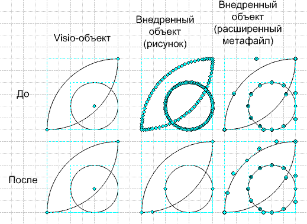

Способы оптимизации линий в Visio.
 Часто снижение производительности Visio может быть вызвано простым использованием клипартов или внедренных объектов и не всегда все можно решить простым использованием метафайлов. У Visio есть свои встроенные инструменты для оптимизации фигур и, хотя данные инструменты описаны в описании к программе, обычно в книгах они не затрагиваются.
Часто снижение производительности Visio может быть вызвано простым использованием клипартов или внедренных объектов и не всегда все можно решить простым использованием метафайлов. У Visio есть свои встроенные инструменты для оптимизации фигур и, хотя данные инструменты описаны в описании к программе, обычно в книгах они не затрагиваются.
Обычно, внедренные объекты – это все же не прямоугольники, а чаще сложные криволинейные объекты. Но при преобразовании, либо Visio, либо программа, из которой был произведен экспорт (хотя это тоже зависит и от формата файла), производят замену кривых линий на ломаную прямую. И если учесть общий вид внедренной фигуры, то получится, что точек, образуемую фигуру может быть на порядок больше, чем в программе «исходнике». Обычно программисты не очень-то стараются сделать наиболее гибкий экспорт, ввиду объективных причин, что часто ведет к ухудшению качества в промежуточном формате и импорте в последующие приложения.
Рассмотрим простой пример. Создадим из клипарта Офис’а фигуру Visio. Фигура может быть найдена по поиску слова boat.
- Вставляем ее на чертеж.
- Разгруппировываем (для чистоты эксперимента).
- Объединяем, чтобы стала одной фигурой.
- Выбираем заливку (черную, к примеру).
Если теперь выбрать инструмент линии, то видно, что большинство кривых состоит из большого количества точек, а не кривых, что логично, учитывая формат исходного файла (WMF). Теперь выбираем в меню Фигура>Операции>Преобразовать в кривые (Shape>Operations>Fit curve…) и в появившемся диалоговом окне выставляем все галочки для более полного распознавания ломаных и в Допуск ошибки вносим 0,04, если не изменялся размер вставленного объекта.
Далее ОК. И что получилось: визуально объект не изменился, но кардинально изменилось количество точек объекта.
Можно так же оценить размер получившейся фигуры…
Если создать пустой файл и поместить 1 024 копий фигур, то размер оптимизированного файла будет меньше в 2,5 раза.
Таким же образом можно сначала скопировать фигуру и сделать специальную вставку, а затем «превратить» в исходную Visio-фигуру.

Соответственно, если провести данные манипуляции со всеми частями внедренного объекта, то в конечном результате можно получить видимое увеличение производительности и меньший размер конечного файла. Хотя иногда проще «подложить» фигуру и обвести ее средствами Visio. В некоторых случаях такая подстановка просто неизбежна, если, к примеру, у фигуры изначально может быть градиентная заливка, много слоев и т.д. от программы - исходника. В этом случае простая замена заливок на Visio-заливки может значительно улучшить ситуацию.
Советы по работе с программой:
- Хотите быстро узнавать название фигур в Visio. Очень просто. Сделайте видимым окно Другие свойства (Вид>Окно Другие свойства). Внизу справа откроется окно. На окне нажмите правой кн. мыши и выберите АвтоСкрытие. Теперь при выборе одиночной фигуры, на торце окна будет высвечиваться название фигуры. И окно не мешает, и названия фигур всегда на виду.
Также приведу один интересный переход заливки фигуры.
 Увеличить
Увеличить
Фоном послужил простой фоновый рисунок (wallpaper). Просто он мне понравился и на его основе создал такую диаграмму, в модном Flash стиле… 8-)
Хотя данный рисунок, видимо, более логично использовать в PowerPoint презентации…
Так строится центральный элемент.
Также можно сделать больше переходов цвета.
А так строится надпись.
Все остальные элементы, это простые фигуры из Visio.
Статьи: 1 2 3 4 5 6 7 8 9 10 11 12 13 14 15 16 17 18 19 20 21 22 23 24 25 26 27 28 29 30
В начало раздела
Автор: Ничков Алексей (a.k.a. Digitall)